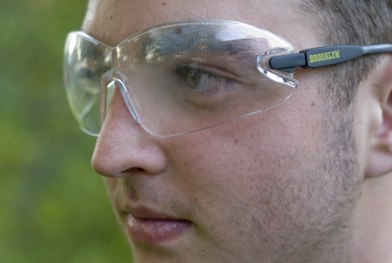

An Active and Eye Safe Lifestyle
90%! That’s the number of sports eye injuries that studies show can be prevented using proper eye protection. Yet most sports leagues don’t require protective eyewear as part of their uniform or safety requirements. This leaves it up to athletes, parents and coaches to ensure that proper measures are taken to keep eyes safe during athletic play.


Protective sports eyewear can come in a number of forms depending on the sport, and includes sports glasses or goggles, eye shields and eye guards. Regular prescription eyeglasses or sunglasses do not protect the eyes and can sometimes cause greater injury if impact is made and lenses or frames are shattered or broken. If you do wear prescription eyewear, there are a number of options including wearing contact lenses with safety eyewear, purchasing prescription safety eyewear or wearing safety goggles over your regular prescription glasses.
What Makes Safety Eyewear Safer?
Protective eyewear is made of impact resistant lenses from materials such as polycarbonate or trivex, which are much stronger than other types of plastic used to make typical eyewear lenses. Polycarbonate has a long history of safety eyewear use in adults and children and Trivex is a newer optical material that is lighter than polycarbonate and offers better optical quality. Both materials have built in ultraviolet protection to protect your eyes from damage from the sun.
Sports frames are also made from strong, impact-resistant materials such as strong plastics or polycarbonates. They tend to cover larger areas than traditional glasses to protect more of the area around the eye and block dust, sunlight and other elements from entering from the sides or top of the frame. Sports glasses and goggles usually incorporate impact resistant padding to create a cushion between the frame and the face or nose for increased comfort, impact absorption and to prevent slipping.
Some goggles do not fit well under helmets, such as those used in football and lacrosse, so it is wise for athletes to bring in their helmets when shopping for sports eyewear to ensure they fit under the helmet properly.
Although athletes often shy away from wearing sports eyewear due to concerns of reduced performance, in reality they often can improve performance with new innovations in sportswear that offer improved peripheral vision.
Common Sports Eye Injuries
Eye injuries commonly occur in baseball, basketball, racquetball, tennis, badminton, and other sports. Here are some of the common types of injuries.
- Scratched eye or corneal abrasion - This is when damage occurs to the external surface of the eye and commonly occur from being poked, scratched or rubbed when there is a foreign body present on the surface such as sand or dust. Corneal abrasions can be very painful, cause redness and sensitivity, particularly to light. Scratched eyes should be treated immediately by a doctor because bacteria can enter through the eye causing serious infections, that can even lead to blindness.
- Blunt trauma/swelling - is when an object, such as a ball or an elbow impact the eye causing swelling or bleeding such as a black eye (in which the eyelids bruise and swell) or a subconjunctival hemorrhage (bleeding from a blood vessel between the white of the eye and the clear conjunctiva). Black eyes may not appear serious but they should be checked out by a doctor to make sure there is no internal damage.
- Traumatic iritis - an inflammation that occurs following an eye injury such as a blunt trauma that affects the color part of the eye that surrounds the pupil. The inflammation should be treated to ensure there is no permanent vision loss.
- Penetrating injury - injuries that occur when a foreign object enters the eye, causing the eye to rupture, can cause severe damage, swelling and bleeding. These should be considered a medical emergency and treated immediately.
As you can see, most of these injuries can be prevented simply by wearing proper protection over the eye. Your vision is essential for playing the sports you love, so don’t put it as risk by failing to protect your eyes properly. With the increasing selection of frames and lenses for safety and sports eyewear at affordable pricing, an active lifestyle can also be safe.
Ready to see clearly?
Book a comprehensive eye exam with Carey Brooks, OD in Frisco, TX.